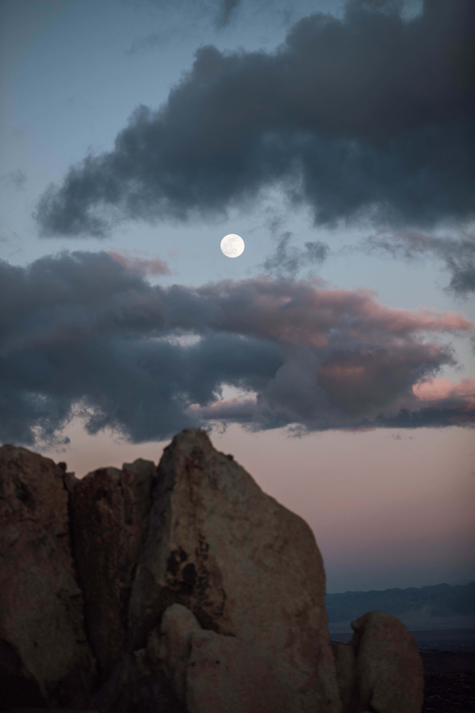

Travel Guides
Romantic Guide to Rome
Amsterdam might not be one of the most haunted places in the world – the scariest sight you’ll find in the city these days is a stag do in the Red Light District – but Amsterdam’s past is filled with some grisly horror stories.
October is the perfect time to imagine which ghosts are haunting the canals. So, if scrolling endlessly through Netflix to find the perfect horror movie isn’t doing it for you this Halloween, here’s a rundown of haunts around old Amsterdam that will leave you with shivers running down your spine.
Skipping the Line in Rome
The largest amphitheater ever constructed, the Colosseum is one of Rome’s most-visited sites—and its easily accessible location right in the city center makes it even more popular. Without a skip-the-line pass, the wait to get inside this 2,000 year-old concrete and sand structure can take over 90 minutes, depending on the time of day and year. Why roll the dice?
Booking a Colosseum skip-the-line tour means you bypass the wait for both the ticket line (you’ll already have yours, as tickets are typically included in the tour price) and the main public entrance line. Plus, with the added benefit of staggered entry times, you won’t be met with huge crowds flooding the arena floor or feel rushed as you snap your photos.Even independent travelers who’d rather explore on their own than with a guide can benefit from skip-the-line access, as both standalone tickets and guided tours are available.

Set the tone for the whole day with a cappuccino on the rooftop terrace of one of the city’s most romantic hotels. The Inn at the Roman Forum, tucked away on a quiet street near the Colosseum
Whether you’re looking to keep the flame alive or ignite one for the first time, your search for that perfect date ends in Rome — the Eternal City. Although one could truly spend an eternity exploring all this historic metropolis has to offer, it’s more than possible to enjoy in say, one day. Our expedited itinerary for Rome goes beyond the long lines of the city’s top attractions to encompass the beautiful sights, quiet neighborhoods, and grand hotels that render Roma so romantic.
 Calvinism? I didn’t say that, I said Capitalism. I had a cold. It just sounded funny. I swear.
Calvinism? I didn’t say that, I said Capitalism. I had a cold. It just sounded funny. I swear.
Related Posts